In this project we implement a basic rasterizer, a program that takes an analog image as input and renders discrete color values over a grid of pixels as an approximate output. Our rasterizer will be able to fill triangles and leverage the barycentric coordinate system to facilitate linear interpolation across them. It will also perform antialiasing via supersampling to capture high-frequency details at lower resolution while demonstrating shape warping according to geometric transformations. Finally, our program will experiment with both pixel and level sampling techniques to achieve varying visual results for mapping textures to surfaces. A motif that appeared throughout this project is that temporarily capturing extra visual information and then using it to inform lower-dimensional output data achieves appealing results.
We represent triangles as a set of 3 different 2-dimensional points, each given by a pair of floating point numbers. To rasterize a triangle in this form, we begin by forming a bounding box around the triangle by isolating the $x$ and $y$ values, taking the minimum and maximum of these two sets, and then rounding all results down to the nearest integer. Let us denote these values for convenience as $x_{\min}$, $x_{\max}$, $y_{\min}$, and $y_{\max}$.
Equipped with these bounds, we iterate through all integers from $x_{\min}$ to $x_{\max}$ in the outer loop and $y_{\min}$ to $y_{\max}$ in the inner loop, thereby reaching each sample in the bounding box. For each of these sample points, we add 1/2 to both the $x$ and $y$ dimension so that we sample the center of the pixel, then perform a three-line test to check if the pixel falls within the bounds of the triangle. If it does, we fill the pixel with the specified color for the triangle; otherwise, we leave it empty and continue with the next pixel in the bounding box.
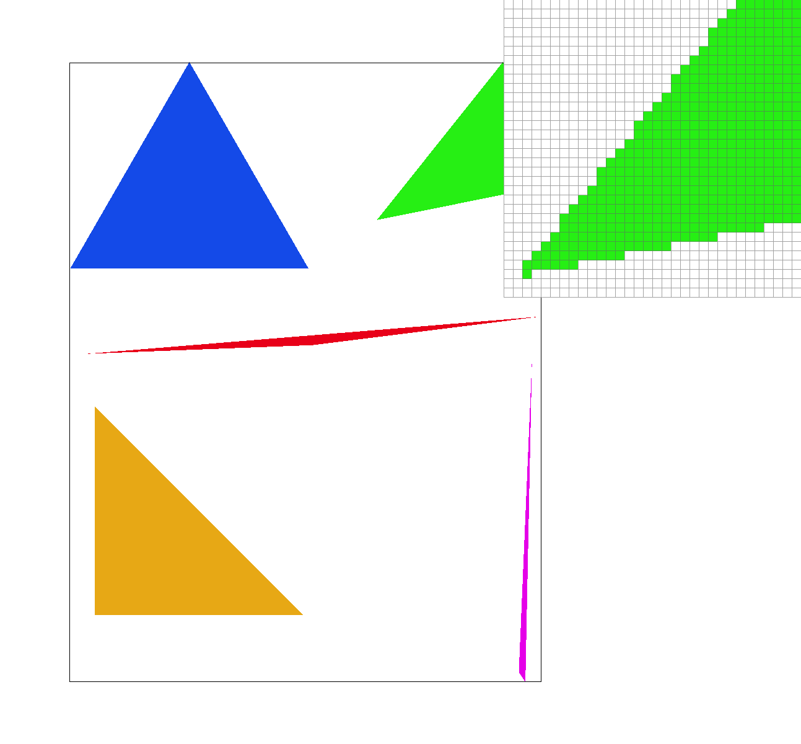
Supersampling is essentially equivalent to rasterizing a higher-resolution frame and then downsampling to the intended resolution via color averaging in order to preserve high-frequency details, thereby rendering a more realistic depiction of the desired scene. Hence, to support our supersampling algorithm, we first had to expand the capacity of the sample buffer by a factor of the sampling rate to fit the extra data that supersampling yields.
To rasterize triangles, we scaled the vertices by the square root of the sampling rate and then performed three-line tests on each of the subsamples within the original pixels, coloring them accordingly. To rasterize points (and lines) we colored in all subpixels corresponding to each output pixel the same color such that when the average is computed later, the original color is preserved without the background color bleeding in.
This averaging is performed as the last step of the supersampling algorithm when converting from sample buffer values to condensed RGB values that are placed in the target frame buffer. This averaging operation results in smoother transitions between finer image details that cannot be captured by coarser sampling. In this sense, supersampling is our method of spatial antialiasing, allowing higher-dimensional information to be preserved to some extent in a lower-dimensional domain.
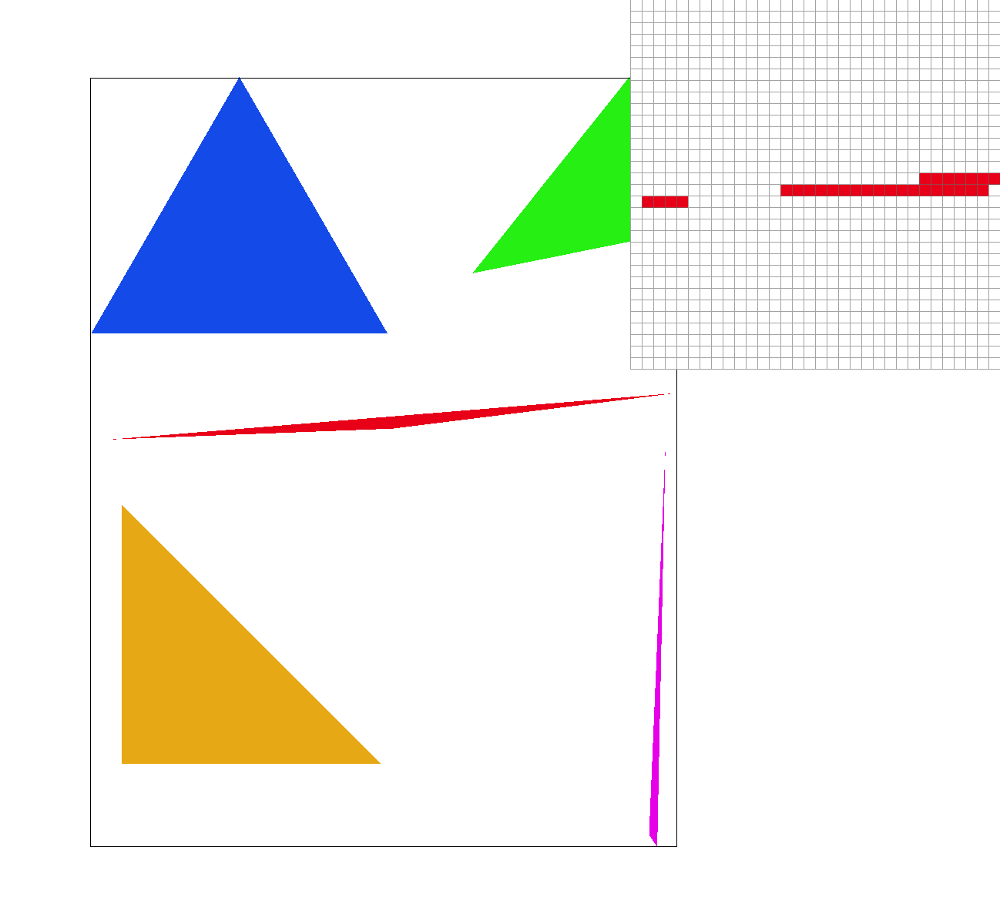
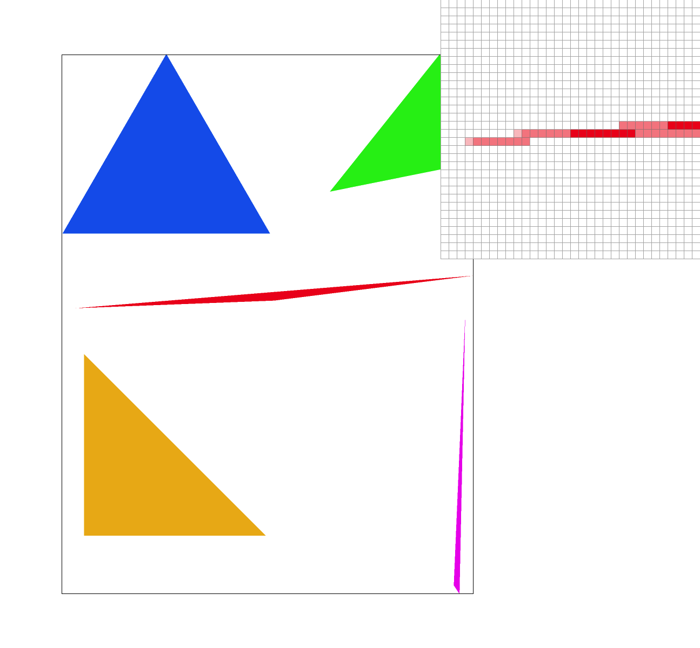
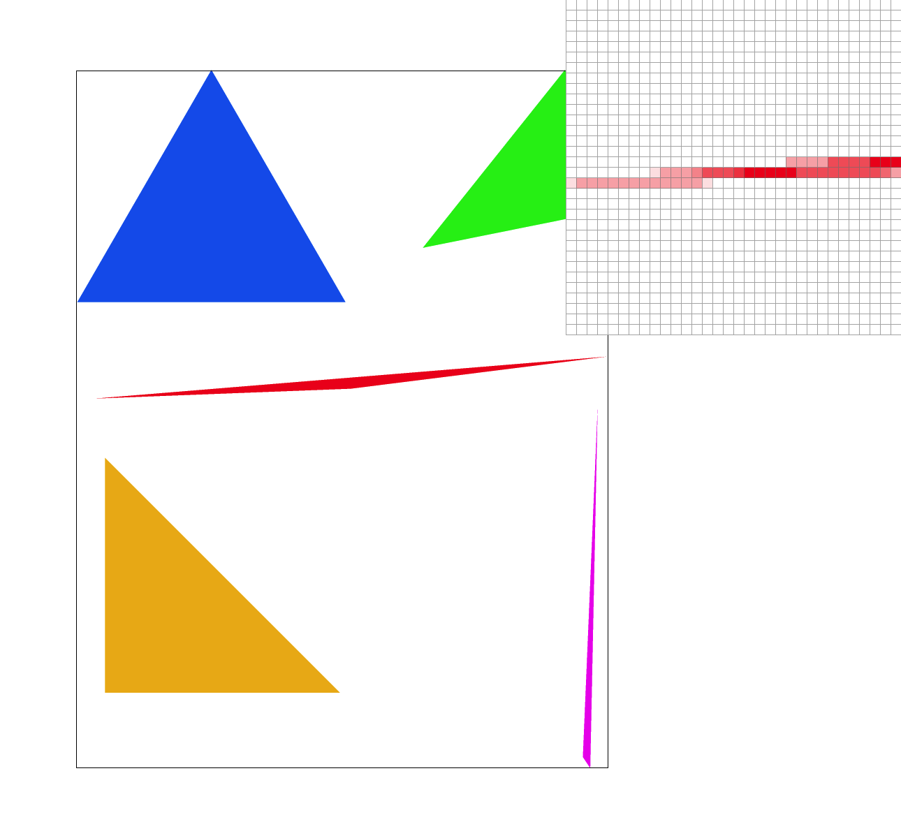
Supersampling results in less jagged edges, which is especially evident in sharp corners such as the ones that appear on skinny triangles. A sampling rate of 1 corresponds to our naive binary approach in which the pixel either falls within the bounds of a triangle and is fully colored, or is out of bounds and therefore left unaltered. Higher sampling rates, on the other hand, provide an illusion of partial pixel containment within triangles, which upon closer inspection manifests simply as color blending with nearby supersampled pixels. This effect is enhanced as the sampling rate increases, as it allows for a broader range of color gradients, creating even more seamless transitions when viewed from afar.
Below, we show Cubeman in his default form, as well as our custom transformation in which Cubeman performs an incredibly aggressive jumping jack.
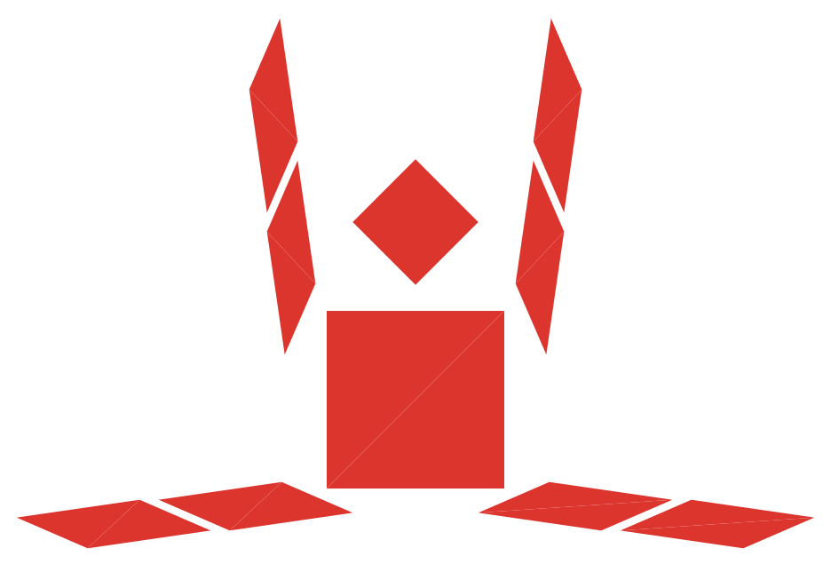
The barycentric coordinates of a point with respect to the vertices of a triangle encapsulate the extent to which each vertex contributes to the location of the point. Thus, 3 coefficients ($\alpha$, $\beta$, and $\gamma$) corresponding to the weight of each vertex, fully define a point in this coordinate system. Note that because these weights represent proportions, they are constrained such that they sum to 1. In the images below, we employ barycentric coordinates to smoothly interpolate the RGB color channels across the interior of a triangle as well as an entire circle using the coefficients of each vertex to compute a weighted color average for each pixel.
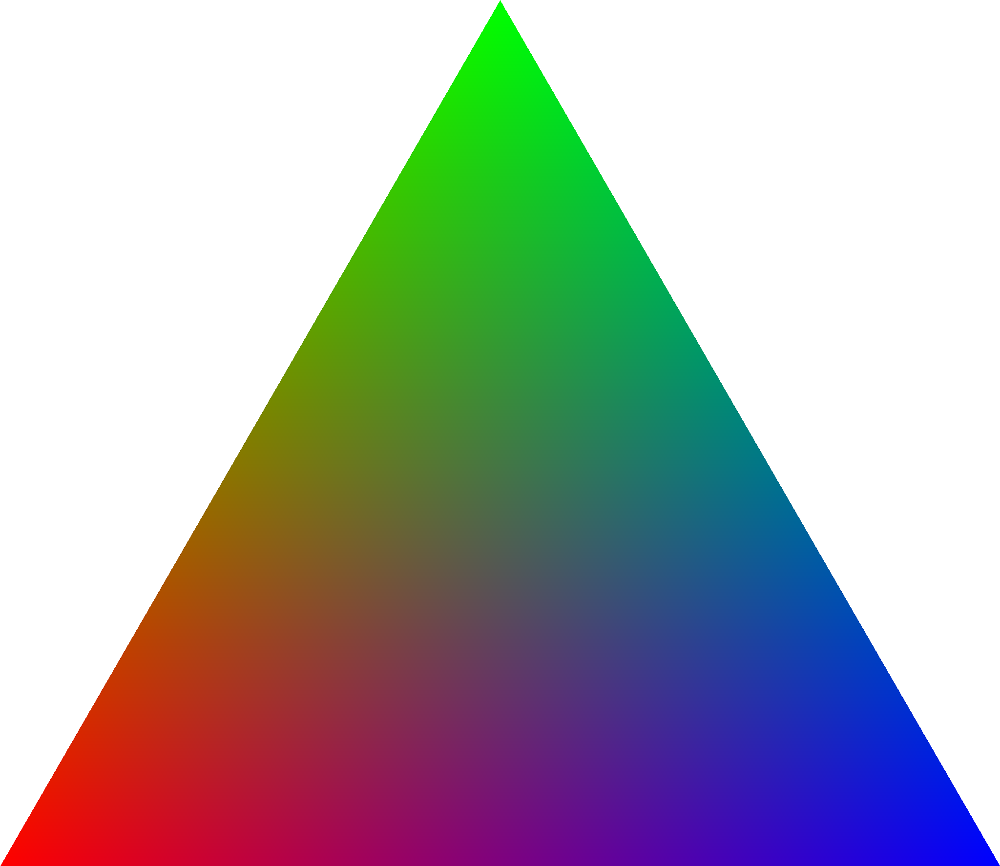
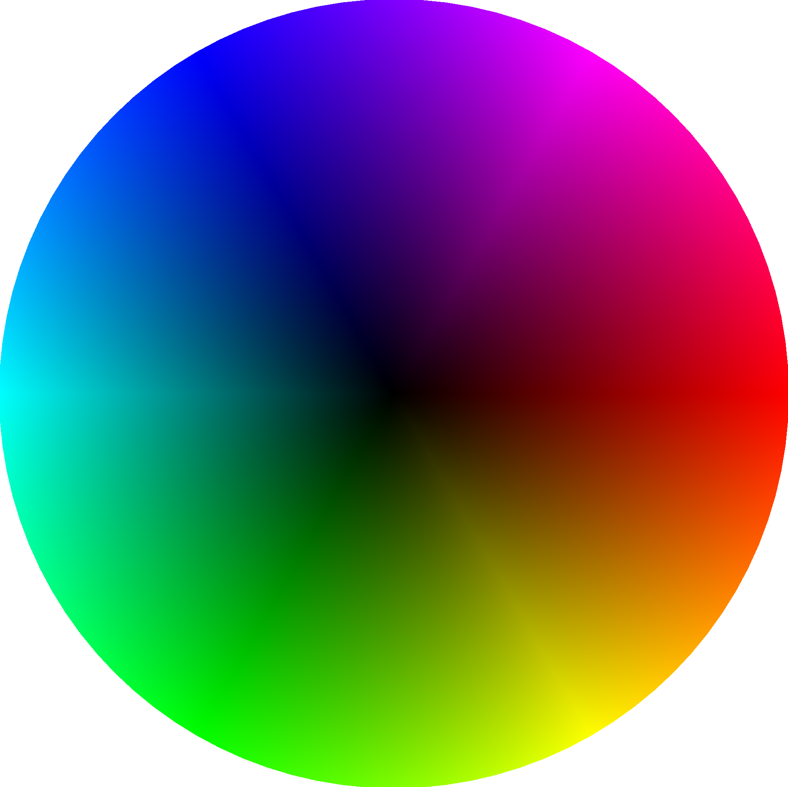
In order to perform pixel sampling, we create a map between the barycentric coordinate points of the triangles we are trying to rasterize, and the corresponding coordinates in the $uv$ space of the texture map. That is to say, for each point in the barycentric coordinate space, we determine the color of that point by sampling the color at the corresponding point in the texture space. There are two ways to perform this sampling: nearest, and bilinear. Nearest sampling selects the color of the pixel nearest to the point in the texture space. In contrast, bilinear sampling selects the weighted average of the colors of the 4 nearest pixels by using 2 levels of linear interpolation.
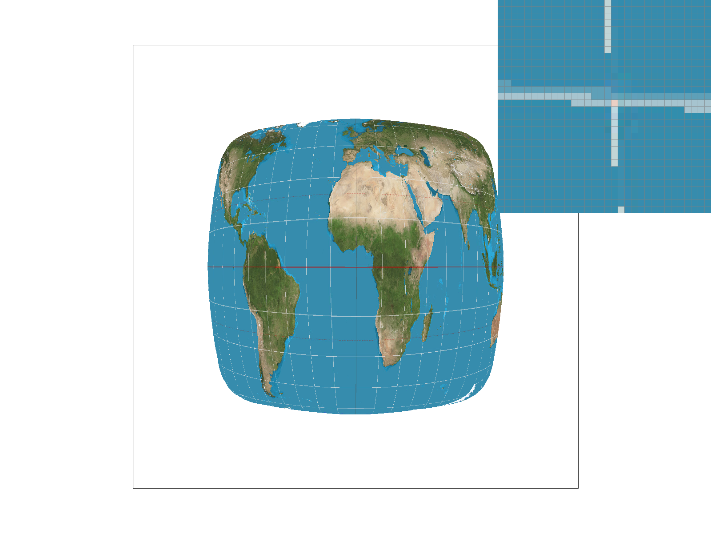
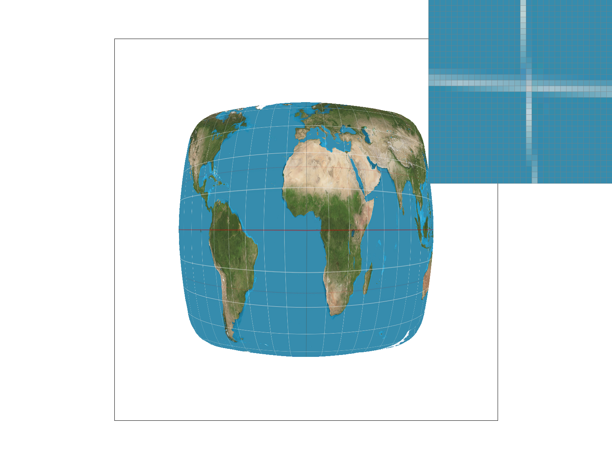
As seen in the images above, there are relatively large differences in the results when using no supersampling. These differences get smaller as the supersample size increases.
When we sample 1 pixel per sample, the longitude and latitude lines created by the nearest sampling method have gaps in them, while the bilinear sampling lines mostly do not, with some exceptions near the edges. This is because the nearest sampling method only takes into account a single pixel when selecting color, which in the case of the longitude and latitude lines, is sometimes the water. In contrast, the bilinear sampling takes into account the 4 nearest pixels, so as long as even 1 of those pixels falls on the line in the texture mapping, it will come through in the result.
As we increase the supersample size, the nearest sampling method becomes an average of all of the pixels in the supersample, increasing the likelihood that at least some of the supersampled pixels fall on the lines instead of in the water. This results in the closing of the gaps in the lines, and appears more similar to the bilinear sampling method. As we increase the supersample size for the bilinear sampling method, the lines become smoother and less jagged, and gaps are filled in the latitude and longitude lines near the edges of the image.
Level sampling is similar to pixel sampling, but instead of sampling colors from a single texture map, we sample the colors from a multi-level mipmap. A mipmap is a precomputed mapping of filtered versions of a texture, with decreasing amounts of detail as the mipmap level increases. In order to determine which level of the mipmap to use, we compare the height and width of the pixel in the $xy$ (screen) space to the height and width of the pixel in the $uv$ (texture mapping) space. This computation composes multiple nonlinear functions such as a logarithm and maximum operation, that approximates the mipmap level as a float which we denote as $D$. Since $D$ is not an exact integer level, there are 2 ways to sample from the discrete levels we have computed: nearest, and bilinear (as with pixel sampling). In the case of nearest-level sampling, we round $D$ to the nearest whole number level, and then sample pixels from that level of mipmap, following the pixel sampling description above. For bilinear level sampling, we perform pixel sampling at the integer levels below and above $D$, and then take the weighted average of the pixel colors sampled at each level.
After implementing supersampling, pixel sampling, and level sampling, we can select the optimal sampling technique based on what we need. Each of these sampling techniques has various tradeoffs between speed, memory usage, and antialiasing power that make them better and worse at sampling in specific situations.
Supersampling is a powerful antialiasing technique, but it becomes slower and uses more memory as the supersample size increases. This is because the sample buffer size scales by supersample size squared, resulting in more values to save in memory and more calculations for averages across more values, and a smoother, antialiased image.
Nearest pixel sampling is a fast, low-memory technique, but it does not perform antialiasing. This is because the technique maps each pixel in the result to a pixel in the texture map, which requires only a small number of calculations and saved pixels.
Bilinear pixel sampling is a low-memory, medium-speed technique that helps with antialiasing. This is because every pixel in the resulting image is the weighted average of 4 samples from the texture mapping. This requires more calculations than the nearest pixel sampling, resulting in lower speed, but the weighted averaging done across the 4 nearest pixels helps with antialiasing.
Level samping is a fast, medium-memory technique that helps with antialiasing. This is because the mipmap is pre-computed (once) for all levels, and can be repeatedly referenced to cut down on the number of calculations and speed up runtime. However, storing the mipmap requires 4/3 of the amount of space that storing a single texture mapping would take, therefore requiring more memory. Additionally, by utilizing higher levels of the mipmap, which contain filtered and blurred versions of the texture map, we can reduce the effects of aliasing.
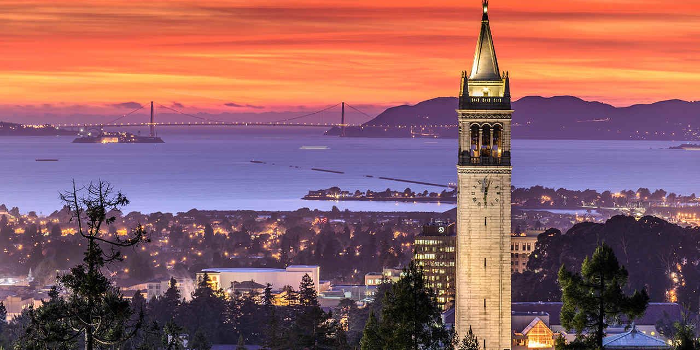
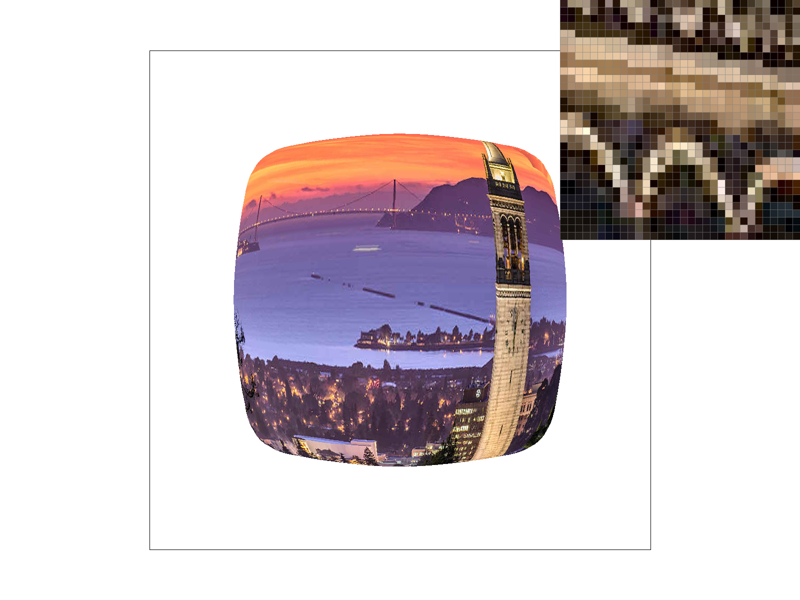
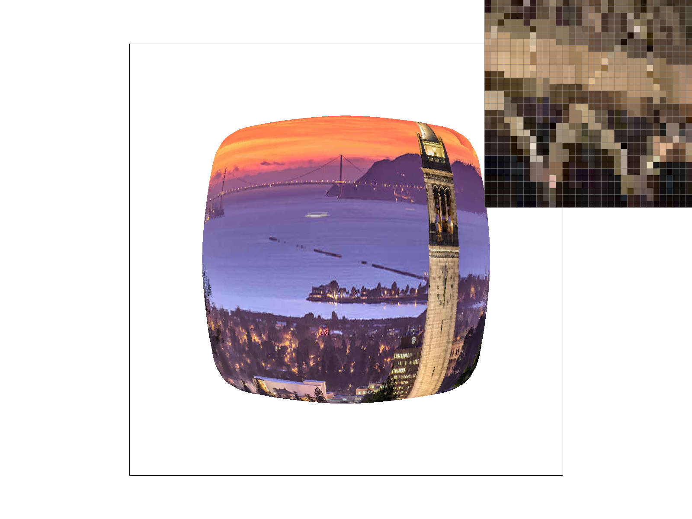
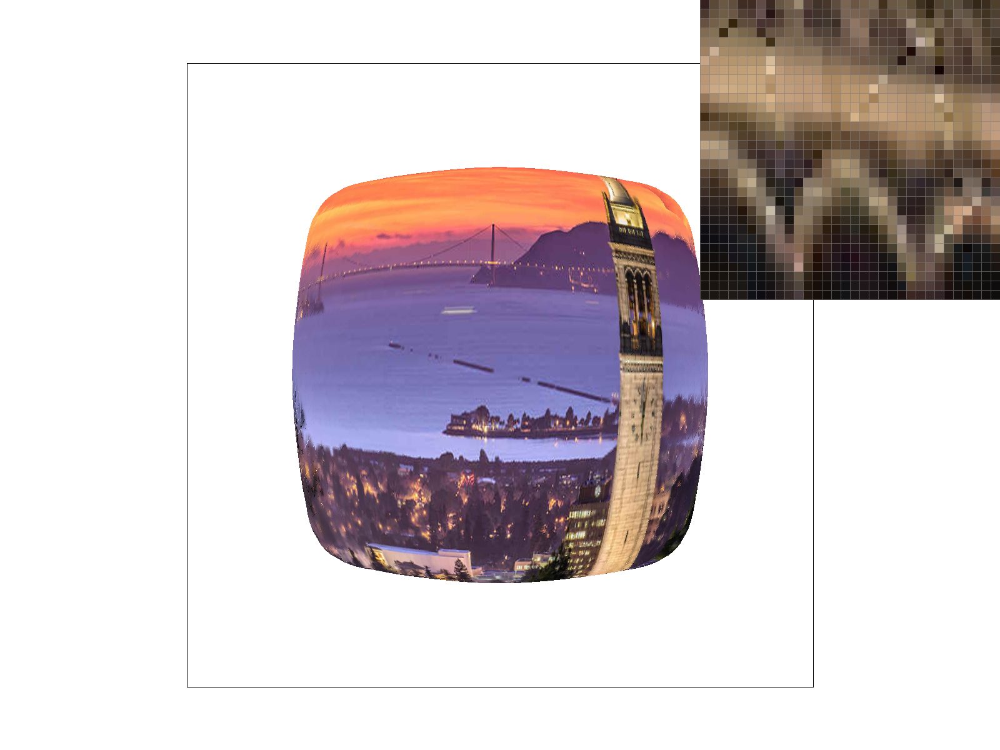